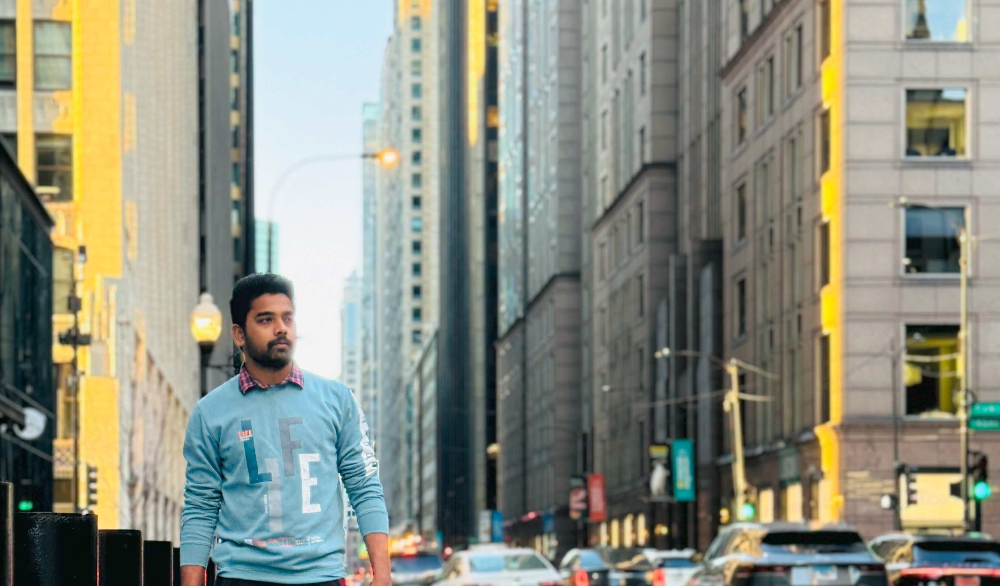

About Me

📄 Download PDF
I'm a highly skilled and results-driven UI/UX Designer with over 3 years of experience delivering user-centric solutions across web and mobile platforms. I specialize in design systems, accessibility, and user research methodologies that drive measurable outcomes. My recent projects have improved user onboarding by 15%, reduced checkout drop-off by 30%, and accelerated development cycles through scalable component libraries.

Highlights
- Charging station discovery with compatibility filters
- Clear battery health messaging and guidance
- IA that prioritizes “find stations”, “battery status”, “navigate”